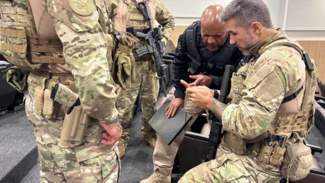
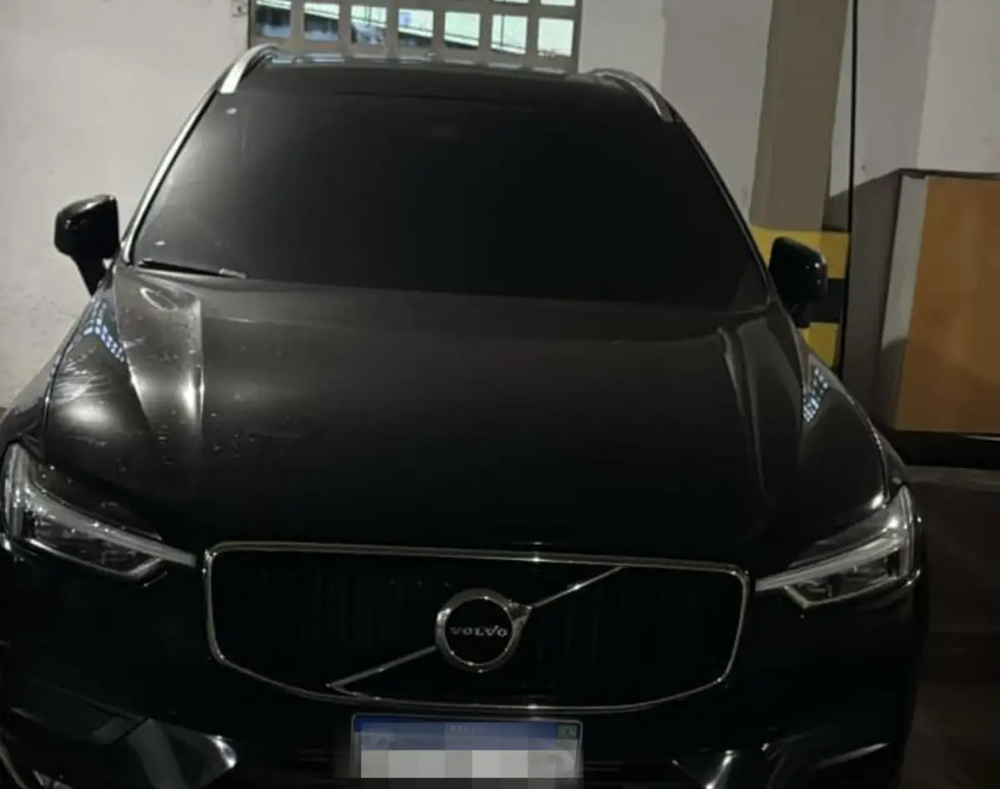

Repórter Davi
Notícias de Feira de Santana e Região
Repórter Davi
Notícias de Feira de Santana e Região
As apurações também identificaram que, além da subtração dos veículos, a organização promovia a adulteração de sinais identificadores.
Publicado em 05/03/2026

Foto: Marcela Correia/Ascom PCBA
Desarticular um esquema criminoso voltado à subtração de veículos pertencentes a empresas locadoras é o principal objetivo da Operação Chave Mestra, deflagrada nesta quinta-feira (5) por equipes do Departamento Especializado de Investigações Criminais (DEIC), da Polícia Civil da Bahia.
A investigação desmontou uma estrutura organizada e articulada voltada à prática reiterada desse tipo de crime. O grupo atuava mediante fraude consistente na reprodução ilegal de chaves veiculares e na instalação clandestina de dispositivos de rastreamento, o que possibilitava a posterior subtração dos automóveis após a devolução regular às locadoras e a nova locação a terceiros de boa-fé.

foto: Marcela Correia/Ascom PCBA
As apurações também identificaram que, além da subtração dos veículos, a organização promovia a adulteração de sinais identificadores, como chassi, motor e vidros, bem como a falsificação de documentos para viabilizar a revenda ilícita. Em seguida, os automóveis eram encaminhados para outras cidades, principalmente para o interior do estado, onde passavam a circular com placas adulteradas ou eram inseridos no mercado clandestino, gerando significativo prejuízo às empresas e fomentando a cadeia criminosa.
Durante a ação, são cumpridos mandados de prisão preventiva e de busca e apreensão nos municípios de Salvador, Feira de Santana, Dias D'Ávila, Aracaju e Balneário Camboriú.
Cerca de 150 policiais participam da operação, por meio de equipes do Departamento Especializado de Investigações Criminais (DEIC), do Departamento de Homicídios e Proteção à Pessoa (DHPP), do Departamento Especializado de Investigação e Repressão ao Narcotráfico (DENARC), do Departamento de Polícia Metropolitana (DEPOM), da Coordenação de Operações e Recursos Especiais (CORE), da Força Correcional Especial Integrada da Secretaria da Segurança Pública (FORCE-SSP), do Departamento de Polícia Técnica (DPT) e da Corregedoria da PM (CORREG/PM).